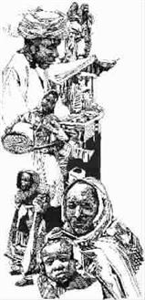

苏丹，我的苏丹
●柳 桦
响 指
响指，俗称打榧子，我的左手打得比右手好，更脆更响，可惜没机会表现，我在苏丹，只用右手打榧子。
在来苏丹之前，看过很多介绍风土人情的资料，可是没有人提到过响指的作用，我也是在一次苏丹人的集会上发现这个秘密的。那是一次婚礼，结婚的人是我一个客户“表”了三千里的表亲，客户带我去见识见识，结果转眼间他就消失在一群同样穿着白袍、带着白布缠头的男人中了。我一个人西服领带地坐在椅子上，手里端着一杯可乐，说不出的别扭，感觉自己不像是来吃饭的客人，反而像是端着托盘到处送饮料的服务员——这个会场，只有我这个外国嘉宾和服务员穿着西服。
好在婚礼邀请了一帮歌手，我借机欣赏了苏丹音乐。果然很有特点，婉转高亢兼而有之，每一首歌都很长，像是一口气唱下来的，真够让人荡气回肠的。当一个女歌手上台演唱的时候，下面响起了一片掌声，我仔细一看，这个歌手可是苏丹国家歌舞团的，每逢重大节日都会出现，电视里也常常能见到。正胡思乱想，就看到台下的宾客三三两两地站起身来，走到台前，把右手高举过头，向着女歌手打榧子，而那女歌手显然也很喜欢这样，同样把右手举起来打着榧子。
我大感兴趣，忍不住凑了过去，大概由于我这个外国人的加入，周围的人也兴奋起来，很快树起一片右手的森林，都吧嗒吧嗒地弹着响指，那声音汇集成一片，倒也好听，弹到兴起处，还要以臀部为轴心前后晃动着身体，不管是上面的歌手，还是下面弹指的人，都分外陶醉。带我来的客户也觉得很有面子，冲出人群跑到我身边来，生怕别人不知道我这个外国人是他带来的。
那天晚上认识了好多人，有新郎家的也有新娘家的，大家都把我当作朋友，我也就不好意思再问为什么要弹响指。直到很久以后，面对另一帮朋友，我才敢问。原来这弹响指就是表示拥戴，表示自己已经将他当作了自己的兄弟姐妹、叔叔婶婶。我这才明白，自己糊里糊涂弹指一挥，竟然有了一大堆苏丹亲戚。
无 姜
要判断一个在苏丹生活的中国人过得怎么样，有几个重要指标：一是看他有没有烟抽；二是看他有没有酒喝，这两项都需要关系够硬、面子够足才能做到。可还有一条，那就是看他厨房里有没有鲜姜，如果隔三岔五能有块鲜姜做菜，那他过得可就不是一般的好了。
苏丹不产鲜姜。当地人也知道姜很重要，他们烹制牛羊肉的时候也离不开姜，不过都是晒成木乃伊的干姜片，这在市场上倒是很容易买到，可怎么也没有鲜姜那种特有的味道。在苏丹，有钱也买不到鲜姜。那些厨房里有鲜姜的中国人，要么能经常去周边国家买，要么就是有人给送，鲜姜就是实力的象征。
有一次机缘巧合，我也得到了几块别人从国内带来的鲜姜，可我没舍得炖一锅肉就这么吃了，而是在院子里找一块空地，细细地翻土，深深地埋下，指望这几块姜能生根发芽。在苏丹，鲜姜也会成为公关利器、社交法宝。所以我把种姜当成了那段时间的工作重点，害怕非洲的太阳欺生，我特意在姜园——我给我那块巴掌大的菜地起的雅号——四周用脚手架钢管搭起架子，上面盖上遮阳的麻袋片，还弄了根漏水的管子当作自动喷灌系统，保持土地湿润。庄稼一枝花，全靠粪当家，我早就去附近的养鸡场要了一麻袋鸡粪，没事就撒上点儿。这些姜还真争气，很快就拱出了星星点点的绿色枝芽。我再也按捺不住，到处打电话报信许愿，短短几天，就许出去几十公斤鲜姜了，大概远远超过我第一次可能有的收成了吧。
然而春风得意，马失前蹄，我的姜一夜之间就枯萎了，我不甘心地挖开泥土，下面的鲜姜已经变成干枯的姜片，来到非洲的短短时日里，它们已经耗尽了身体里全部的养分，尽情绽放了自己的生命。
我带着敬意封闭了姜园，每日黄昏还来坐坐，这已经是这些日子养成的习惯了。过了很久之后，还有些不太熟的朋友辗转托人要到我的电话，问我有没有鲜姜，我总是告诉他们，有，还没有长出来。
捏牛黄
苏丹的集市上曾经有过一景，在牛羊肉柜台前悬挂着很多深绿色的小袋袋，大小不一，颜色也深浅不同，迎着阳光一眼望去，有些竟然晶莹剔透，发出绿宝石般的光芒，如果不是苍蝇们孜孜不倦地绕着它飞，还真像是某种奇异的热带水果。这是牛或者羊的苦胆。
在30年前，最早的一批中国人进入苏丹的时候，有个中国厨师，每次去市场买菜，总要到牛羊肉柜台，沿着那些苦胆一路走过去，边走边伸手在每一个苦胆上捏一下。同去的人问他原因他也不说，后来才知道，他是在找牛黄。
牛黄是名贵的中药，生长在牛的胆内，是病变的产物，有强心、解热的药效。苦胆是软的，有了牛黄的苦胆就变硬了，厨师一心想找到变硬的苦胆。只是这东西也是可遇不可求的，苏丹的牛又长得比较健壮，轻易也不得病，所以那个厨师捏了好久，才捏到了一块，很大，据说很值钱。
那时候中国人的圈子不大，很快就人人皆知了，于是中国人有事没事就跑到集市上，去了就沿着牛羊肉的摊子一路捏过去，一个早晨之内，那些苦胆要被中国人捏上七八回。苏丹人觉得奇怪，可问谁，谁也不说。大家心照不宣，因为一旦被苏丹人知道他们在找什么，牛黄就不可能再被捏到了——宰牛的会先捏上一遍，卖肉的又会再捏一遍。
据说，这个秘密一直守了好多年，成了两国之间一个不解的文化之谜。其实两个相隔遥远的文明之间，注定是有好多不同的，比如苦胆，中国人不会把它们挂出来卖的，可在苏丹，卖得比肉价格还贵。
这是因为苦胆是苏丹一些传统佳肴里不可缺少的重要调味品。苏丹至少有两道名菜是离不开苦胆汁的。一道是把生的牛肚、牛肝、牛肺等切成碎块，与西红柿丁、洋葱丁混合起来，浇上碧绿的苦胆汁搅拌一下生吃，端上来花红柳绿，颜色鲜艳娇嫩；另外一道则更为地道，选刚宰杀的小羊羔的羊肝，切成片状用苦胆汁拌和了生吃，现宰现吃，吃的时候羊肝的热气还没有消散。
这些都是苏丹人赞不绝口的食品，作为最尊贵的客人，苏丹朋友是一定要请你吃这样的菜的。你不能不吃，否则就是对人家不尊重。只好硬着头皮，连连称赞地生吞下去，哪怕吃完马上就到厕所去吐，哪怕回家后就吃黄连素。我们的领导人常说的一句话是“中苏友谊牢不可破”，一说就是几十年，我一直以为是句套话。现在才知道，能成为套话的话，都是不简单的。在这句话的后面，有多少代中国人一次次地在这种饭桌上刻骨铭心地忍耐啊。
现在的苏丹人，饮食习惯也已经改变了很多，我在这里混了三年，各种级别的饭局出席了无数，可是从没有吃到过用苦胆汁调制的食品。
现在，苏丹的牛羊肉市场，也已经很少看到挂满苦胆的景象了，而且中国人越来越多，也没见到谁再去捏牛黄。
(刘迪摘自《海外文摘》2006年第11期，高兴奇图)